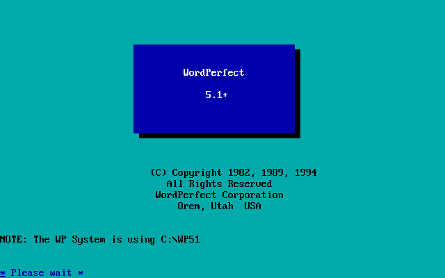
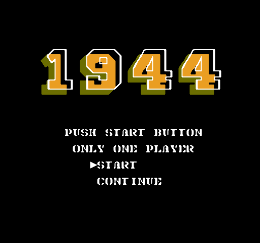
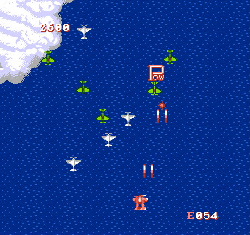
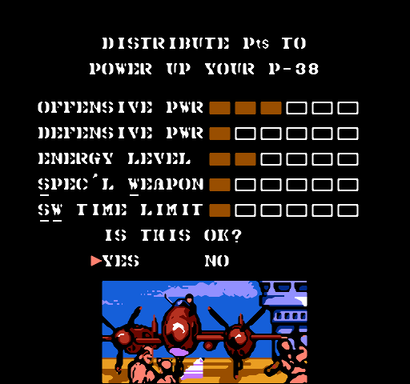
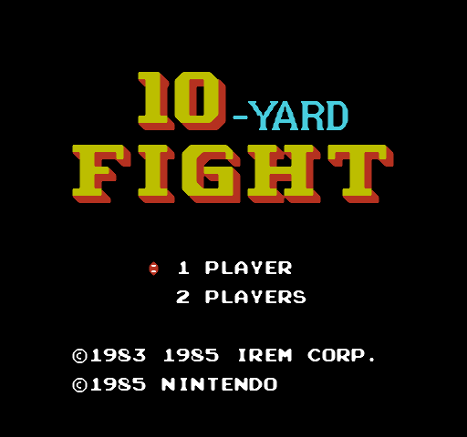
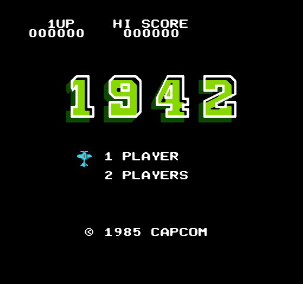

Like the last post, this one is a double feature. Sadly, unlike WordPerfect 5.1, which was released for both DOS and Windows with the same version number, MS Word used different numbers for is DOS and Windows version. So I've arbitrarily picked a DOS and Windows version each ...
Continue reading »
Technically, this blog is meant to be about video games. But I've written about hardware and magazines and books and whatever this is, so I figure anything fitting broadly under the retrocomputing banner is fair game.

This one may be familiar to you. WordPerfect 5.1, released in 1989 ...
Continue reading »
It's a pirate version of 1943:

The only change that I noted between this and 1943 is that holding down the fire button, rather than charging the weapon, yields a very fast auto-fire. Otherwise, identical:

Verdict: Play 1943 instead.
Continue reading »
An excellent conversion of Capcom's vertical scrolling shooter:

This one has more features than its predecessor, such as the ability to configure your plane before you start:

Also, when you start, it tells you briefly what your target is. In the first level, it's Rikaku, the Japanese Heavy ...
Continue reading »
It's an American football game. I don't know the rules of the game, but, honestly, I doubt that matters for this game.

We start the game running down the field, and quickly meet the opposing team:

This scene repeats, with the referee running out every few seconds, since ...
Continue reading »
The famous vertical scrolling shooter:

It's not too bad. You control the plane, which moves pretty smoothly, and shoot the enemies. A rather basic idea, but workable:

Unfortunately, this one just doesn't measure up to its sequel, 1943. I can't show it in a screenshot, but the ...
Continue reading »